Creación de Contenido: desarrollo de ideas y piezas que conectan con la audiencia.
Crea Ideas Comunica Historias Conecta Personas
Contenido, estrategia y creatividad digital para darle personalidad a tu marca y conectar con tu audiencia.
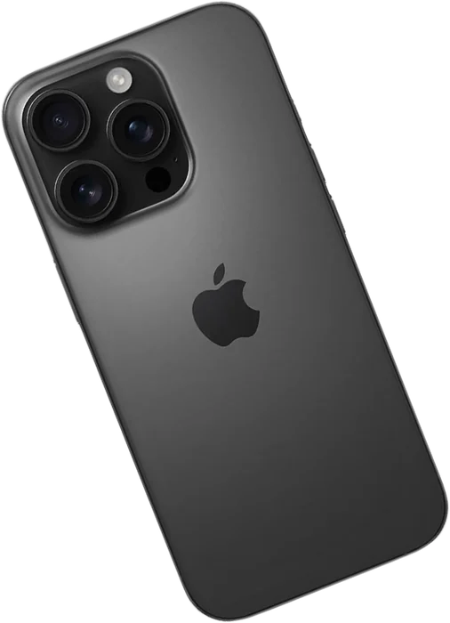
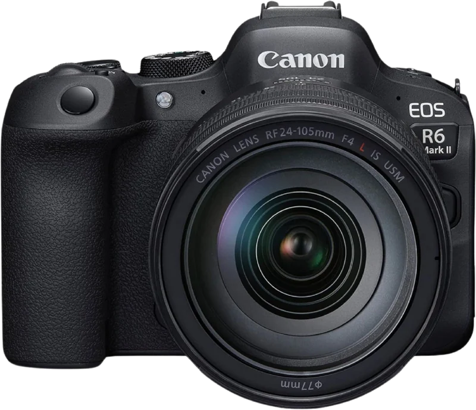
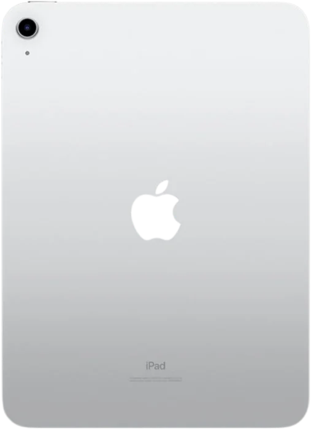
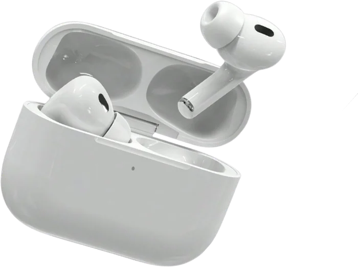
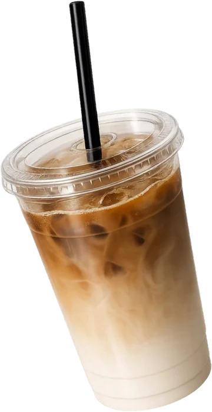
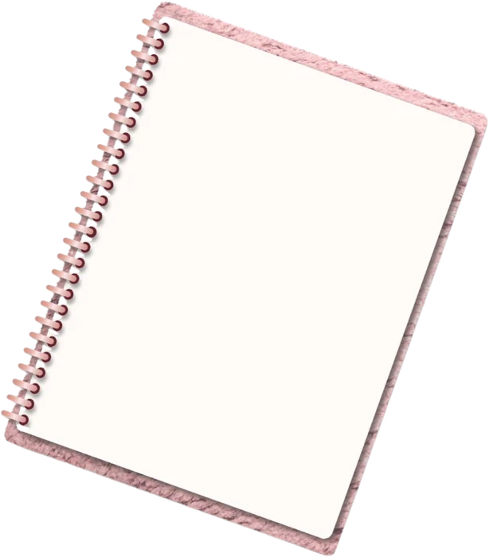
BienvenidosaBy ninis
Perfil Profesional
Edición y contenido visual: creo piezas atractivas y coherentes con cada marca.
Forma de trabajar: conozco la esencia de cada marca y la transformo en contenido con intención, personalidad y propósito.
Enfoque creativo: desarrollo contenido con intención, sin perder la esencia de la marca.
¡Hola!
Soy Denise
Soy una persona curiosa y soñadora. Me encanta viajar, conocer lugares nuevos y vivir experiencias que después pueda convertir en recuerdos e historias para contar.
Disfruto mucho crear contenido, tomar fotos, editar, escuchar música y pasar horas descubriendo cosas nuevas en internet. También me gusta aprender idiomas y explorar todo lo que tenga que ver con la creatividad y el mundo digital.
Siempre tengo una idea rondando por la cabeza y que disfruto probar cosas nuevas, aunque no siempre salgan perfectas. Creo que gran parte de lo que soy viene de esa curiosidad por aprender, crear y descubrir qué quiero hacer a continuación.
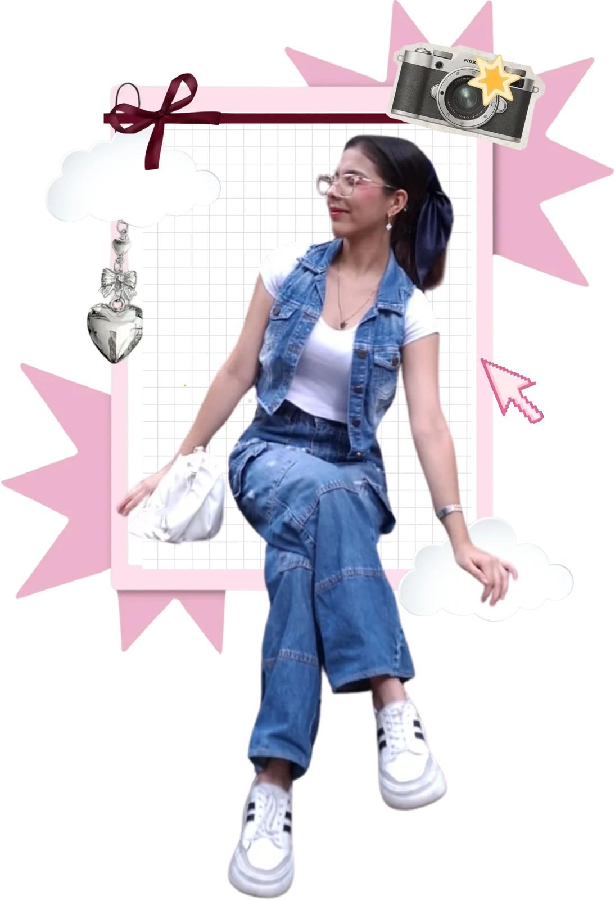
FotografíaDe Bebidas
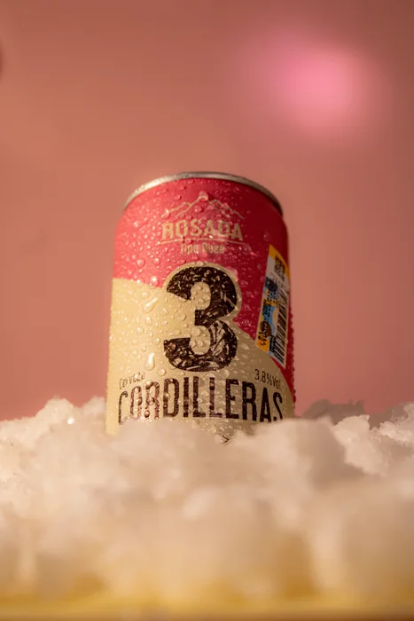
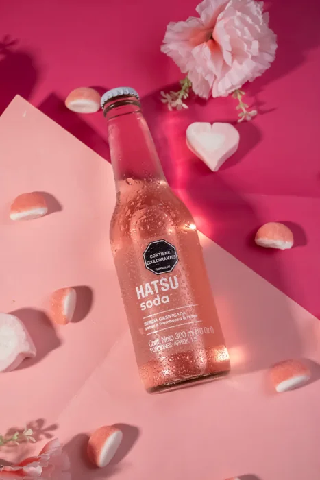
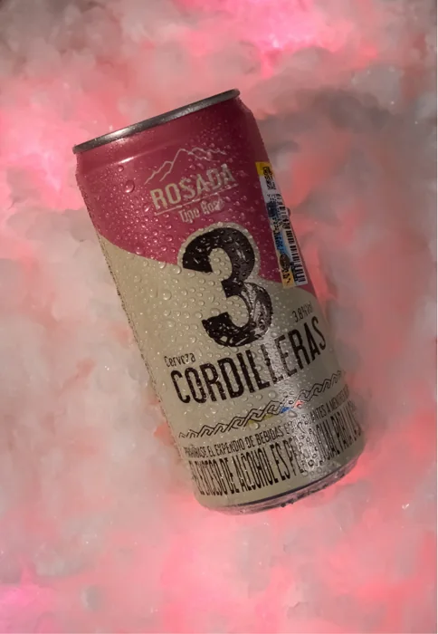
FotografíaMermelada
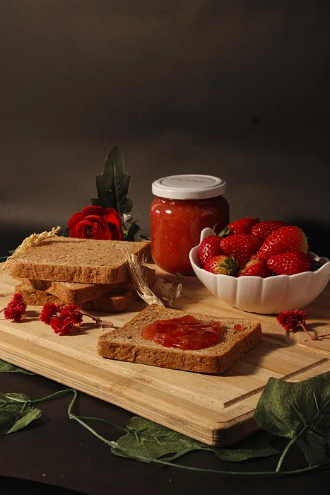
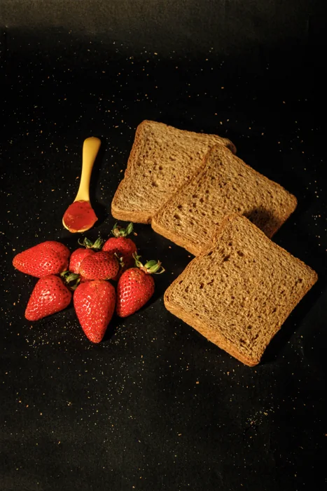
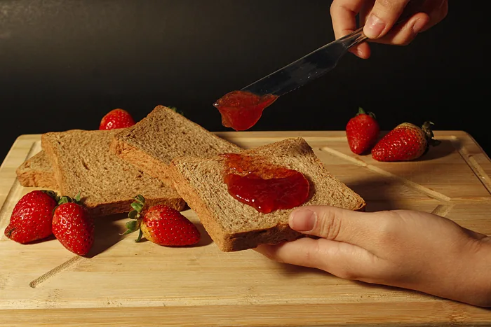
Creadora y
Editora de Contenido
La creación y edición de contenido consiste en desarrollar piezas visuales y audiovisuales que comuniquen las ideas y esencia de una marca de forma atractiva.
Creo y edito contenido para redes sociales, desde la idea y conceptualización hasta la edición final, cuidando que cada pieza sea creativa, dinámica y coherente con la identidad de la marca.
Solicitar informaciónMarketing Digital
El marketing digital reúne estrategias y acciones que permiten a las marcas conectar con su público y fortalecer su presencia en los medios digitales.
Desarrollo propuestas y estrategias de contenido enfocadas en los objetivos de la marca, su público y su comunicación, buscando generar una presencia digital con intención y propósito.
Solicitar informaciónGestora de Redes
Sociales
La gestión de redes sociales busca mantener una presencia digital organizada, activa y coherente, fortaleciendo la comunicación entre una marca y su comunidad.
Planifico y organizo el contenido, gestiono las publicaciones y apoyo el crecimiento de las redes, buscando que cada perfil tenga una comunicación cercana y una identidad definida.
Solicitar información¡Hablemos!
Hagamos algo increíble
¿Tienes una idea o proyecto?
Estoy aquí para ayudarte a hacerlo realidad.
BrandingBy ninis
Logo
Mi logo refleja la esencia de lo que hago: la fluidez de su trazo manuscrito representa la creatividad y la edición de contenido, mientras que la estructura en arco de "by ninis" simboliza el marketing y la gestión de redes sociales que abrazan y potencian cada proyecto. Su tono cálido transmite autenticidad y cercanía, dejando en cada estrategia y video mi sello de autor único
Anatomía
Isotipo de las iniciales ‘b’ y ‘n’ manuscritas
Tipografía de trazo libre y fluido, representando creatividad y edición
Composición dinámica y orgánica, representando dinamismo en redes sociales
Texto ‘by ninis’ en arco, simbolizando comunidad y cercanía
Paleta de Colores
Esta combinación de tonos cálidos y suaves equilibra delicadeza y personalidad, creando una identidad visual cercana, femenina y moderna. Los tonos rosados aportan frescura y creatividad, mientras que los neutros y el marrón profundo generan contraste y sofisticación.
Haz clic en un color para copiar su código HEX.
Tipografía
Lobster
Tipografía manuscrita, fluida y llamativa que transmite una personalidad creativa, cercana y auténtica. Sus formas curvas y dinámicas aportan un toque moderno y amigable, ideal para una marca personal que busca destacar y sentirse fresca y espontánea.
ABCDEFGHIJKLM
NOPQRSTUVWXYZ
abcdefghijklm
nopqrstuvwxyz
0123456789 # + ¡! ¿?
Inknut Antiqua
Tipografía sans-serif clara, accesible y altamente legible que transmite una personalidad profesional, limpia y estructurada. Sus trazos sencillos y proporciones equilibradas aportan un toque de simplicidad y modernidad sin esfuerzo, ideal para una marca personal que busca proyectar claridad, confianza y comunicación directa.
A B C D E F G H I J K L M
N O P Q R S T U V W X Y Z
a b c d e f g h i j k l m
n o p q r s t u v w x y z
0 1 2 3 4 5 6 7 8 9 # + ¡! ¿?